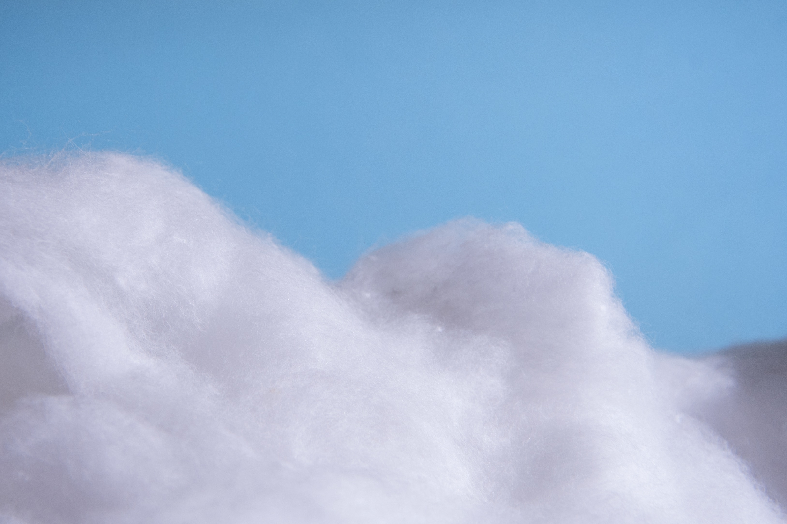
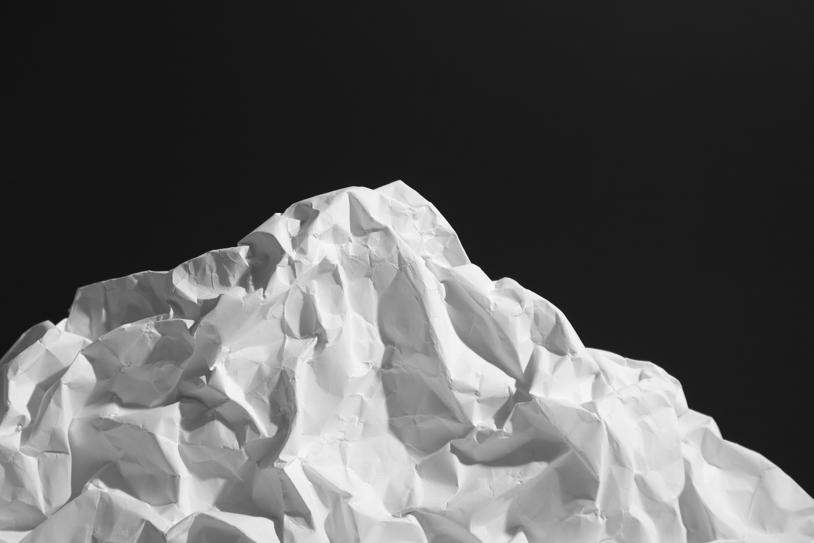
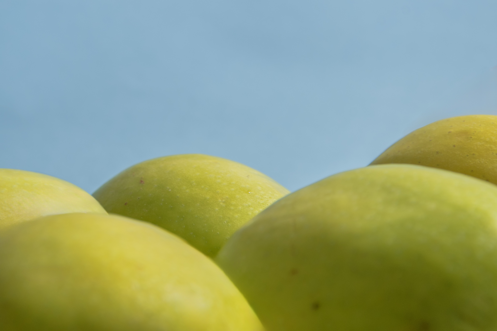
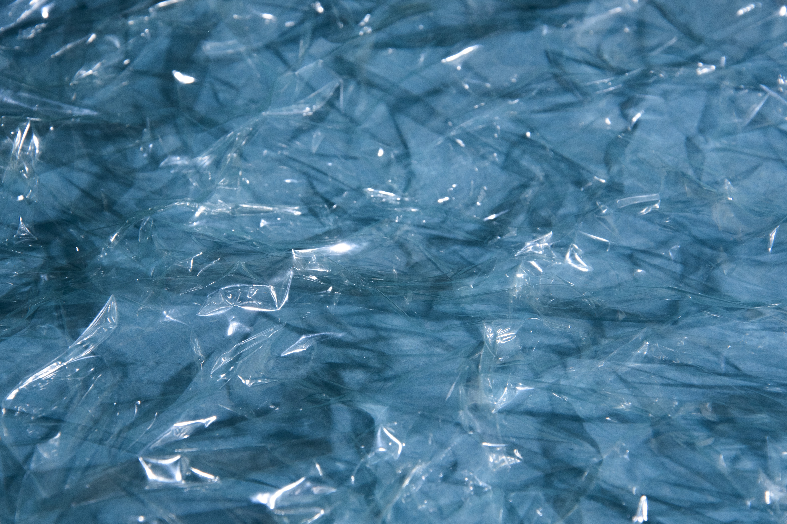
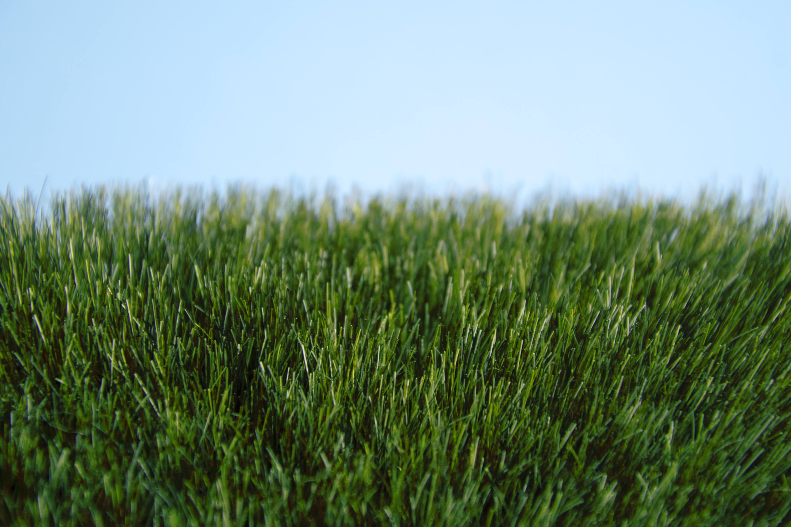
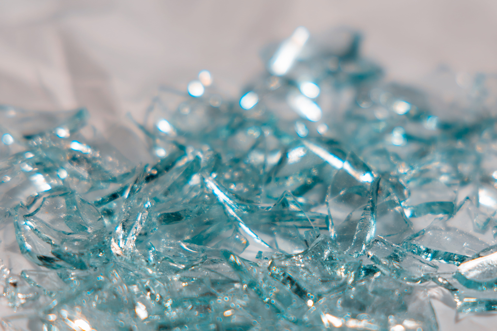
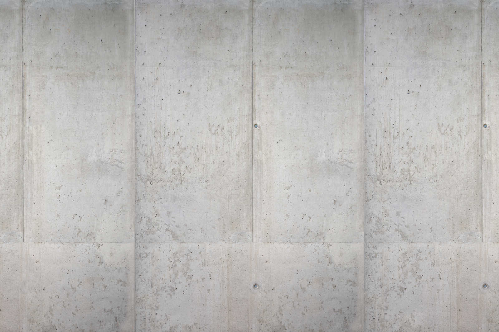
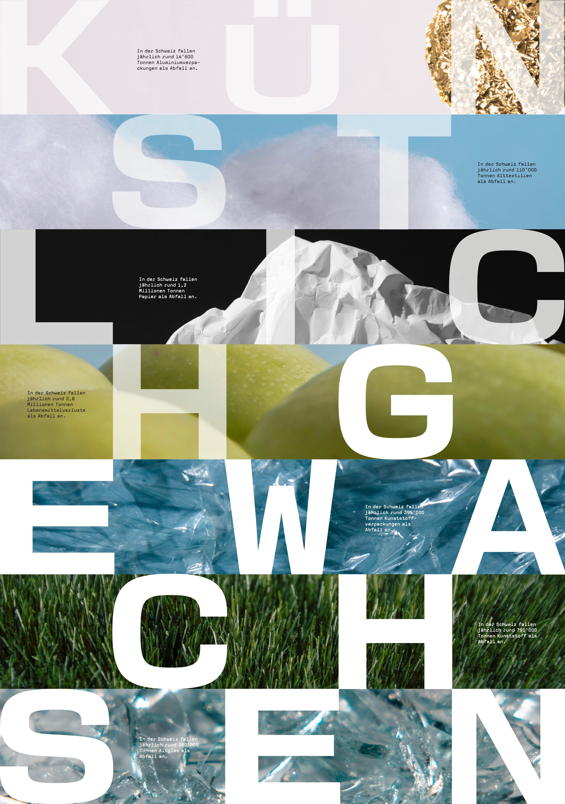

What does nature look like when it is no longer real? Aluminium replaces the sun, textile becomes clouds, paper becomes a mountain, foodwaste become hills, plastic becomes water and meadow, glass becomes ice. From waste emerge landscapes, artificially grown yet deceptively real. The photographic staging shows nature where there is none and blurs the boundary between beauty and destruction. The poster is constructed like an ideal world, clearly divided into columns that separate the various artificial natural worlds from one another.Wie sieht Natur aus, wenn sie nicht mehr echt ist? Aluminium ersetzt die Sonne, Textil wird zu Wolken, Papier zu einem Berg, Lebensmittel zu Hügeln, Plastik zu Wasser und Wiese, Glas zu Eis. Aus Abfall entstehen Landschaften, künstlich gewachsen, täuschend echt. Die fotografische Inszenierung zeigt Natur, wo keine mehr ist, und lässt die Grenze zwischen Schönheit mit Zerstörung verschwimmen. Das Plakat ist wie eine ideale Welt aufgebaut, klar gegliedert in Spalten, die die verschiedenen künstlichen Naturwelten voneinander trennen.








TransitionsÜbergänge
Where does the artificial begin, and where does the natural end? The newspaper builds upon the poster and tells this development as a visual sequence. At the beginning, the pages show real landscapes: water, meadow, sky, light. Step by step, the images transform, and materials take over the forms of nature. Paper becomes a mountain, plastic becomes water, metal becomes sun. A handwritten script is added, bringing back the human element, the irregular. Thus, a field of tension emerges between naturalness and constructionWo beginnt das Künstliche, und wo hört das Natürliche auf? Die Zeitung baut auf dem Plakat auf und erzählt diese Entwicklung als visuelle Abfolge. Zu Beginn zeigen die Seiten reale Landschaften: Wasser, Wiese, Himmel, Licht. Schritt für Schritt verwandeln sich die Bilder und Materialien übernehmen die Formen der Natur. Papier wird zu einem Berg, Kunststoff zu Wasser, Metall zu Sonne. Eine handgeschriebene Schrift fügt sich hinzu und bringt das Menschliche, das Unregelmässige zurück. So entsteht ein Spannungsfeld zwischen Natürlichkeit und Konstruktion.